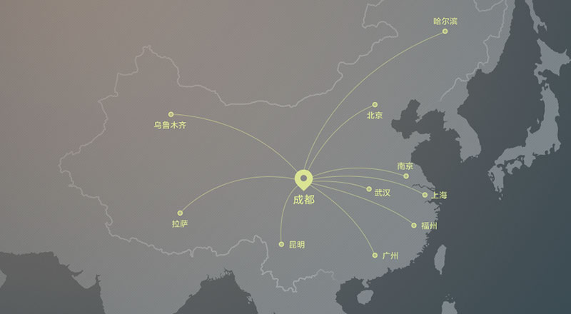

个人与家庭
更早健康投入，更多健康获益
— 更少的医疗费用 —
用100元投入健康管理
可有效避免医疗费用开支约10000元
对高血压进行综合管理
每年可减少药物、住院等医疗费用开支约3691元
对糖尿病进行综合管理
可有效避免并发症引发的大宗医疗费用单次住院费减少约12000元
通过6个月的管理
降低30%的健康风险因素
— 更具成效的健康管理 —

对心脑血管疾病及潜在风险进行管理与预防
可有效降低脑卒中、心肌梗死、猝死等高发事件发生率
避免庞大的医疗、照护等医疗费用开支
可有效降低脑卒中、心肌梗死、猝死等高发事件发生率，避免庞大的医疗、照护等医疗费用开支

通过对血压、血糖、体重的有效管理
保护心脑血管，调节血脂、血糖、体重，显著改善个体潜在的焦虑
抑郁症状，有效改善生活方式
保护心脑血管，调节血脂、血糖、体重，显著改善个体潜在的焦虑、抑郁症状，有效改善生活方式
途欢优质的医疗服务团队
覆盖您身边的每一家社区医院最优秀的家庭医生。覆盖包含华西医院、省人民医院、成都中医药大学、成都体育医院在内的三甲医院的权威专科医生。覆盖心脏内科、内分泌科、甲状腺乳腺外科、中医治未病等多学科临床医生。拥有心脏内科、内分泌科、外科等学科的顶尖医疗顾问

